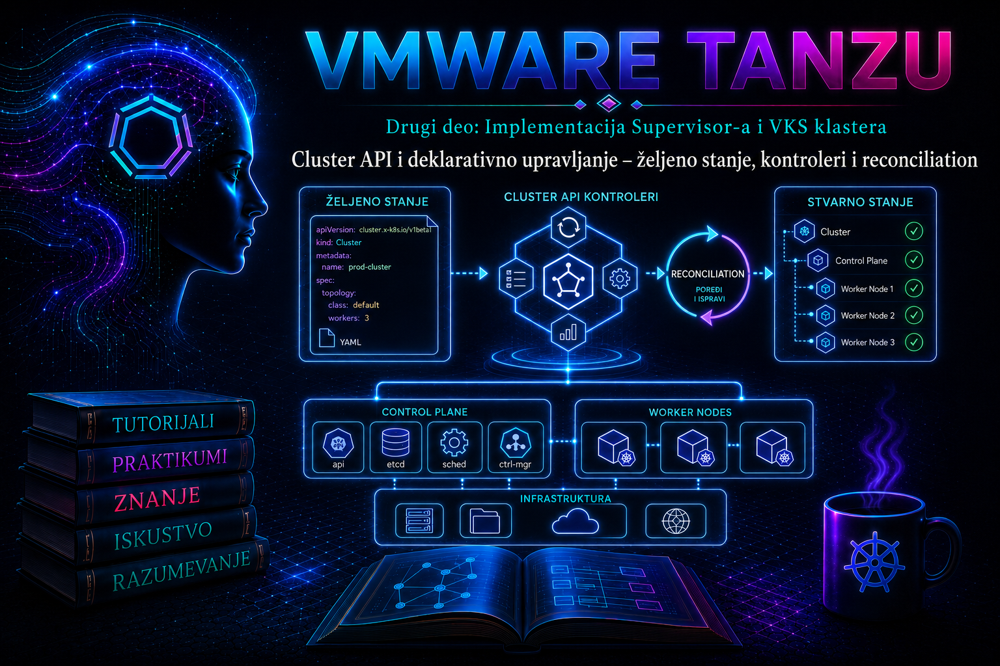

VMware & Tanzu

U prethodnoj lekciji kreiran je prvi VKS klaster i potvrđeno je da njegov Kubernetes API odgovara na zahteve. Ova lekcija objašnjava mehanizam koji stoji iza tog rezultata: zašto YAML objekat nije samo jednokratno uputstvo za instalaciju, kako Supervisor pretvara deklarisano željeno stanje u virtuelne mašine i funkcionalan Kubernetes klaster, zbog čega isti kontroleri nastavljaju da rade i posle uspešnog provisioninga i kako administrator razlikuje normalan tok usaglašavanja od stvarnog kvara.
Cluster API, skraćeno CAPI, jeste Kubernetes projekat za deklarativno kreiranje, konfiguraciju, nadogradnju i upravljanje životnim ciklusom Kubernetes klastera. Njegova osnovna ideja često se opisuje izrazom Kubernetes upravlja Kubernetes-om: management klaster čuva API objekte koji predstavljaju workload klaster, a skup kontrolera kontinuirano približava realnu infrastrukturu stanju zapisanom u tim objektima. U vSphere okruženju management ulogu ima Supervisor, dok je VKS klaster upravljani workload klaster. Administrator zato ne upravlja pojedinačnim VM-ovima kao nezavisnim vSphere objektima, već menja podržanu specifikaciju klastera i dopušta kontrolerima da koordinisano sprovedu promenu.
run.tanzu.vmware.com/v1alpha3 i noviji ClusterClass-zasnovan cluster.x-k8s.io/v1beta1. Dostupnost modela, ugrađene ClusterClass klase, promenljive i dozvoljene tranzicije zavise od verzije Supervisor-a i instaliranog VKS/TKG Service izdanja. Primer iz dokumentacije nikada ne primenjuj pre provere CRD-ova i resursa koje oglašava konkretan Supervisor.
1. Deklarativni model: specifikacija nije skripta
Imperativni postupak opisuje niz naredbi: napravi VM, priključi mrežu, dodaj disk, instaliraj Kubernetes i konfiguriši čvor. Deklarativni postupak opisuje cilj: klaster određene Kubernetes verzije, sa određenim brojem control-plane i worker čvorova, VM klasama, storage klasama, mrežnim parametrima i dodatnim svojstvima. Kontroleri biraju podržani redosled radnji, ponavljaju neuspele korake i objavljuju rezultat kroz status i događaje. Time se povećavaju ponovljivost i auditabilnost, ali se odgovornost administratora ne smanjuje: loše željeno stanje može biti dosledno i automatski sprovedeno sa jednako doslednim lošim posledicama.
| Element | Značenje | Administratorsko pravilo |
|---|---|---|
spec |
Željeno stanje koje korisnik ili ovlašćeni automatizovani sistem deklariše. | Menjaj samo dokumentovana i podržana polja; specifikaciju čuvaj u kontroli verzija. |
status |
Stanje koje su kontroleri poslednje opazili, uključujući uslove, razloge i poruke. | Ne uređuj ručno. Koristi ga kao dokaz, ali proveri i vreme poslednjeg opažanja. |
metadata.generation |
Brojač promena željene specifikacije. | Uporedi ga sa status.observedGeneration kada je to polje izloženo. |
conditions |
Sažeti signali kao što su Ready, InfrastructureReady ili ControlPlaneReady, sa razlogom i porukom. | Ne gledaj samo True/False; čitaj reason, message i vreme tranzicije. |
events |
Hronologija važnih pokušaja i grešaka povezanih sa objektom. | Prikupljaj ih rano jer imaju ograničen period zadržavanja. |
ownerReferences |
Veza vlasništva koja omogućava praćenje zavisnih objekata i garbage collection. | Koristi je za rekonstrukciju lanca; ne uklanjaj je radi „odglavljivanja”. |
finalizers |
Zaštita koja odlaže brisanje dok kontroler ne očisti spoljne resurse. | Ručno uklanjanje je poslednja mera uz podršku proizvođača, jer može ostaviti VM-ove, diskove ili mrežne objekte bez vlasnika. |
2. Management klaster, workload klaster i granica upravljanja
CAPI objekti za VKS klaster nalaze se na Supervisor-u, u Supervisor Namespace-u kojem je tim dobio pristup. Tu rade kontroleri i tu se posmatra lifecycle infrastrukture. Aplikativni objekti, kao što su Deployment, Service i PersistentVolumeClaim, nalaze se u API-ju samog VKS klastera. Ova dva konteksta ne smeju se mešati: komanda može biti sintaksno potpuno ispravna, ali beskorisna ili opasna ako je izvršena nad pogrešnim Kubernetes kontekstom.
| Sloj | Tipični objekti | Primarna odgovornost |
|---|---|---|
| Supervisor / management sloj | Cluster, Machine, MachineDeployment, control-plane i vSphere infrastrukturni objekti, VirtualMachine |
Lifecycle VKS klastera, VM-ova, infrastrukture i bootstrap-a. |
| vSphere infrastruktura | VM, diskovi, mrežni interfejsi, load-balancer/VIP i povezani inventarski objekti | Realni resursi koje provider i VM Service stvaraju ili menjaju. |
| VKS / workload sloj | Node, aplikativni workload-i, CNI/CSI komponente i add-on paketi |
Rad Kubernetes control plane-a i korisničkih aplikacija. |
Upstream CAPI koristi zajedničke ugovore i provider-specifične resurse. Core kontroleri upravljaju apstrakcijama kao što su Cluster, Machine i MachineDeployment; bootstrap provider priprema podatke za inicijalizaciju čvora; control-plane provider upravlja control-plane mašinama; infrastrukturni provider realizuje VM-ove, mrežu i druge resurse. VMware implementacija dodatno povezuje taj tok sa Supervisor servisima, VM Service-om, storage i mrežnim funkcijama platforme. Tačni nazivi vidljivih resursa razlikuju se po izdanju, zbog čega se topologija otkriva iz API-ja, a ne iz sećanja.
3. Reconciliation petlja: kako sistem približava stvarnost cilju
Kontroler posmatra objekte koji su u njegovoj nadležnosti. Kada dobije događaj ili periodično ponovo proveri stanje, čita željenu specifikaciju, posmatra zavisne Kubernetes i spoljne vSphere resurse, izračunava razliku, izvršava ograničenu idempotentnu akciju i ažurira status. Jedan prolaz ne mora završiti ceo posao. Kreiranje VM-a, dobijanje IP adrese, bootstrap, pridruživanje klasteru i provera zdravlja odvijaju se asinhrono i kroz više petlji.
- API server prihvata objekat posle autentikacije, autorizacije, admission provera, podrazumevanih vrednosti i validacije šeme.
- Kontroler opaža novu generaciju ili promenu zavisnog resursa.
- Utvrđuje da li infrastruktura, control plane i worker sloj odgovaraju specifikaciji.
- Kreira, menja ili označava zavisne objekte za brisanje; zatim čeka spoljne sisteme.
- Upisuje uslove, razloge, poruke i opaženu generaciju u
status. - Ponavlja postupak dok cilj nije dostignut, a zatim nastavlja nadzor radi korekcije budućeg odstupanja.
kubectl apply potvrđuje da je API prihvatio zahtev; ne potvrđuje da su VM-ovi kreirani, da je bootstrap završen niti da je klaster spreman. Obrnuto, privremeno stanje False ili Unknown tokom kontrolisane zamene čvora ne mora značiti incident. Presudni su smer napretka, razlog, trajanje, događaji i zdravlje zavisnosti.
4. ClusterClass i topologija: kontrolisana apstrakcija
Noviji CAPI model koristi ClusterClass kao administrativno definisan obrazac. Klasa objedinjuje infrastrukturne, bootstrap i control-plane šablone, dozvoljene promenljive i pravila lifecycle-a. Korisnički Cluster zatim navodi klasu, Kubernetes verziju, broj control-plane replika, worker topologiju i vrednosti izloženih promenljivih. Time platform tim centralizuje podržanu arhitekturu, a korisnički tim dobija jednostavniji i sigurniji ugovor.
Ugrađene klase i njihove verzije nisu univerzalne. Naziv poput builtin-generic-..., strukturu variables i podržane vrednosti treba preuzeti iz dokumentacije tačno instaliranog VKS/TKG Service izdanja i proveriti na Supervisor-u. Kopiranje manifesta iz drugog okruženja može proći YAML parsiranje, a pasti na admission validaciji ili kasnije u reconciliation-u zbog nedostupne VM klase, storage klase, image-a, mreže ili nekompatibilne Kubernetes verzije.
# READ-ONLY — izvršiti nad Supervisor kontekstom i ciljnim namespace-om
kubectl config current-context
kubectl api-resources | grep -E '(^|[[:space:]])(clusters|clusterclasses|machines|machinedeployments)([[:space:]]|$)'
kubectl api-versions | grep -E 'cluster\.x-k8s\.io|run\.tanzu\.vmware\.com'
kubectl get clusterclass
kubectl explain cluster.spec --api-version=cluster.x-k8s.io/v1beta1
Ako kubectl explain ili kubectl get clusterclass ne uspe, ne zaključuj odmah da je servis pokvaren. Najpre potvrdi kontekst, namespace, RBAC dozvole i stvarno oglašene API resurse. Neki detalji provider resursa mogu biti skriveni korisniku namespace-a, dok ih platform administrator vidi sa višim privilegijama.
5. Deklarativna promena, mutabilnost i rollout
Nisu sve promene jednake. Skaliranje worker grupe može dodati ili ukloniti mašine; promena Kubernetes verzije ili dela šablona često pokreće rolling update; promena VM klase može zahtevati zamenu čvorova, a pojedina polja mogu biti nepromenljiva. Admission webhook može odbiti nepodržanu promenu pre nego što počne, dok drugi problem postaje vidljiv tek kada kontroler pokuša da realizuje novu generaciju.
| Promena | Moguća posledica | Pre produkcije proveriti |
|---|---|---|
| Broj worker replika | Kreiranje ili kontrolisano uklanjanje čvorova; promena kapaciteta i troška. | Kvote, raspoloživ kapacitet, PodDisruptionBudget, anti-affinity i raspored podova. |
| Kubernetes verzija/image | Rolling zamena control-plane i worker mašina prema podržanom upgrade putu. | Kompatibilnost VKS izdanja, CNI/CSI i add-on paketa, backup i prozor održavanja. |
| VM klasa | Moguća zamena mašina; privremeni dodatni kapacitet tokom rollout-a. | Binding VM klase u namespace-u, host kapacitet, HA/DRS i aplikativna dostupnost. |
| Storage parametri | Nova politika za buduće objekte ili nepodržana/imutabilna promena; postojeći diskovi se ne „sele” nužno. | StorageClass/policy dostupnost, datastore kapacitet, zaštita podataka i podržana migracija. |
| Mrežna topologija | Može biti nepromenljiva ili zahtevati složen reprovisioning. | Dokumentovane granice, IPAM, DNS, load balancer, firewall i plan migracije. |
Direktno menjanje VM-a u vCenter-u stvara drift između realnog i željenog stanja. Kontroler takvu promenu može poništiti, zameniti mašinu ili ostati u grešci. Isto važi za ručno brisanje provider objekata. Kada hitna intervencija zahteva odstupanje od deklarativnog toka, ona mora biti podržana, dokumentovana, vremenski ograničena i praćena planom povratka pod kontrolu reconciler-a.
6. Bezbednost, odgovornost i GitOps disciplina
Deklarativni API postaje upravljački interfejs infrastrukture. Pravo da se menja Cluster može posredno značiti pravo da se kreiraju ili brišu VM-ovi, troši storage, menja kapacitet i pokrene zamena čvorova. RBAC zato treba da prati podelu odgovornosti: platform administrator upravlja Supervisor servisom, klasama, kvotama i politikama; operator klastera menja dozvoljeni lifecycle u svom namespace-u; aplikativni tim upravlja workload-ima u VKS klasteru.
- Manifeste čuvaj u Git-u bez kubeconfig fajlova, tokena, privatnih ključeva i tajni.
- Za produkciju koristi pregled izmene, validaciju šeme, odobrenje i evidentiran prozor održavanja.
- Jedan izvor treba da bude vlasnik polja. Ručni
kubectl edit, pipeline i GitOps kontroler ne smeju se nadmetati nad istim poljima. - Pre primene sačuvaj trenutni manifest i relevantan status, ali ne vraćaj slepo ceo eksport jer sadrži serverska i statusna polja.
- Koristi najmanje privilegije i poseban servisni identitet za automatizaciju; audit zapis treba da pokaže ko je promenio željeno stanje.
# READ-ONLY — prikaz prava trenutnog identiteta
kubectl auth can-i get clusters.cluster.x-k8s.io -n <supervisor-namespace>
kubectl auth can-i patch clusters.cluster.x-k8s.io -n <supervisor-namespace>
kubectl auth can-i delete clusters.cluster.x-k8s.io -n <supervisor-namespace>
# READ-ONLY — serverska validacija; ne menja objekat
kubectl apply --server-side --dry-run=server \
-f vks-cluster.yaml -n <supervisor-namespace>Server-side dry-run proverava autentikaciju, autorizaciju, admission i poznatu API šemu, ali ne dokazuje da postoje slobodni CPU, memorija, IP adrese i datastore kapacitet niti da će spoljni sistemi uspešno završiti posao. To su odvojene pre-flight provere.
7. Posmatranje željenog i opaženog stanja
Najpouzdanija dijagnostika ide od korenskog objekta ka zavisnim objektima i realnoj infrastrukturi. Počni sa Cluster uslovima, zatim identifikuj control-plane i worker resurse, prati Machine objekte, njihove provider reference i odgovarajuće VirtualMachine resurse. Tek potom prelazi na vCenter zadatke, događaje, mrežu, storage i API samog workload klastera.
# READ-ONLY — Supervisor kontekst
NS=<supervisor-namespace>
CLUSTER=<vks-cluster>
kubectl get cluster "$CLUSTER" -n "$NS" -o wide
kubectl describe cluster "$CLUSTER" -n "$NS"
kubectl get cluster "$CLUSTER" -n "$NS" -o yaml
kubectl get events -n "$NS" \
--field-selector involvedObject.name="$CLUSTER" \
--sort-by='.metadata.creationTimestamp'
# Otkrivanje, pa pregled resursa koji su stvarno dostupni u izdanju
kubectl api-resources | grep -E 'Cluster|Machine|VirtualMachine'
kubectl get machines -n "$NS" -l cluster.x-k8s.io/cluster-name="$CLUSTER" -o wide
kubectl get machinedeployments -n "$NS" \
-l cluster.x-k8s.io/cluster-name="$CLUSTER" -o wide
Promenljive NS i CLUSTER su lokalne shell vrednosti, ne sistemske opcije. Sve navedene komande su read-only. Ako određeni resource type nije oglašen ili nije dozvoljen korisniku, zabeleži rezultat api-resources i auth can-i umesto da nasumično isprobavaš stare nazive resursa.
Primer tumačenja uslova:
metadata.generation: 7
status.observedGeneration: 7
Ready: False
Reason: ScalingUp
Message: Waiting for 1 Machine to become ready
Zaključak: kontroler je opazio poslednju specifikaciju, ali rad još traje.
Sledeća provera: nova Machine, infrastrukturni/VM objekat, događaji i bootstrap.8. Tipični kvarovi i dokazni lanac
| Simptom | Verovatna oblast | Dokaz pre korekcije | Bezbedna naredna akcija |
|---|---|---|---|
| API odbija manifest odmah | Pogrešan API, šema, RBAC, admission ili imutabilno polje | Tačna serverska poruka, api-resources, explain, auth can-i |
Ispravi manifest prema instaliranom izdanju; ne zaobilazi webhook. |
| Cluster dugo ostaje Provisioning/False | Kvote, VM klasa, image, IPAM, DNS, storage, load balancer ili bootstrap | Conditions, događaji, Machine/VM status i vCenter task/event | Otkloni potvrđenu zavisnost; dopusti kontroleru da ponovi petlju. |
generation je veći od opažene generacije |
Kontroler još nije obradio zahtev, ne radi ili je red blokiran | Vreme izmene, controller workload-i i logovi dostupni platform administratoru | Proveri zdravlje VKS/CAPI servisa pre nove izmene specifikacije. |
| Jedna Machine nije Ready | Provisioning VM-a, bootstrap, mrežna dostupnost ili kubelet | Machine condition, provider objekat, VM status, IP i workload Node | Koriguj osnovni uzrok; ne briši nasumično više mašina. |
| Brisanje ostaje Terminating | Finalizer čeka čišćenje nedostupnog ili zavisnog resursa | deletionTimestamp, finalizers, ownerReferences, događaji i stanje infrastrukture |
Obnovi zavisnost ili ukloni prepreku; finalizer uklanjaj samo uz podržanu proceduru. |
| Promena iz Git-a se vraća ili nastaje konflikt | Više field manager-a ili drugi kontroler nameće stanje | metadata.managedFields, GitOps događaji i audit zapis |
Odredi jednog vlasnika polja i uskladi repo sa odobrenim stanjem. |
Controller logovi se čitaju na Supervisor-u, ali nazivi namespace-a, paketa i deployment-a zavise od izdanja, a pristup je često rezervisan za platform administratora ili Broadcom podršku. Najpre otkrij raspoložive objekte, zatim ograniči logove na vreme incidenta, ime klastera, namespace, UID i vrednosti reason. Ne preuzimaj stare putanje ili nazive podova iz tuđeg KB članka bez potvrde da odgovaraju tvom izdanju.
# READ-ONLY — samo ako nalog ima platformske privilegije
kubectl get namespaces
kubectl get deployments -A | grep -E 'capi|cluster-api|kubeadm|tkg'
kubectl get pods -A | grep -E 'capi|cluster-api|kubeadm|tkg'
# Zameniti stvarnim namespace-om i deployment-om otkrivenim iznad
kubectl logs -n <controller-namespace> \
deployment/<controller-deployment> \
--since=30m --all-containers=true \
| grep -E '<vks-cluster>|<object-uid>|error|failed|timeout'9. Praktikum – praćenje i kontrolisana promena željenog stanja
9.1. Cilj, kontekst i topologija
Cilj je da operator na laboratorijskom VKS klasteru rekonstruiše CAPI lanac, napravi dokazni snimak početnog stanja, izvede jednu podržanu deklarativnu promenu i potvrdi da je reconciliation završen bez ručnog menjanja VM-ova. Topologija obuhvata jedan Supervisor, jedan namenski laboratorijski Supervisor Namespace i jedan postojeći VKS klaster sa najmanje jednom worker grupom. Vežba se izvršava sa administrativne radne stanice na kojoj su dostupni odgovarajući vSphere login dodatak i kubectl.
9.2. Preduslovi, privilegije i procena rizika
- Supervisor i VKS servis su zdravi, a postojeći VKS klaster je Ready.
- Operator ima pravo
get/list/watchnad lifecycle resursima ipatch/updatenad ciljnim Cluster objektom. - Potvrđene su kvote, VM klasa, storage i najmanje jedna slobodna IP adresa za dodatni worker.
- Aplikacije imaju odgovarajuće resource requests i pravila raspoređivanja; vežba se ne izvodi na produkcionom klasteru.
- Početni broj worker replika je poznat. Rollback je vraćanje upravo na tu vrednost, ne brisanje klastera.
9.3. Kontrolna tačka A – identitet, kontekst i API ugovor
# READ-ONLY
kubectl config current-context
kubectl config view --minify
kubectl auth can-i get clusters.cluster.x-k8s.io -n <supervisor-namespace>
kubectl api-resources | grep -E 'Cluster|Machine'
kubectl get clusterclass
kubectl get cluster <vks-cluster> -n <supervisor-namespace> -o yaml
Očekivani rezultat je potvrđen Supervisor kontekst, vidljiv ciljni Cluster i API/ClusterClass koju taj objekat stvarno koristi. Sačuvaj izlaz u evidenciju promene uz uklanjanje osetljivih podataka. Kriterijum prolaza: ime, namespace, apiVersion, klasa, trenutna verzija, topologija, replike i Ready uslov mogu se nedvosmisleno utvrditi.
9.4. Kontrolna tačka B – snimak zavisnih resursa
# READ-ONLY
NS=<supervisor-namespace>
CLUSTER=<vks-cluster>
kubectl get cluster "$CLUSTER" -n "$NS" -o wide
kubectl get machines -n "$NS" \
-l cluster.x-k8s.io/cluster-name="$CLUSTER" \
-o custom-columns='NAME:.metadata.name,PHASE:.status.phase,NODE:.status.nodeRef.name,PROVIDER:.spec.providerID'
kubectl get events -n "$NS" --sort-by='.metadata.creationTimestamp' | tail -n 30Zabeleži početni broj Machine objekata, njihove faze i vreme poslednjih događaja. U vSphere Client-u pronađi isti namespace i klaster, ali ništa ne menjaj na VM-ovima. GUI služi za korelaciju Kubernetes objekta sa vCenter zadacima, događajima, VM stanjem, datastore-om i mrežom.
9.5. Kontrolna tačka C – priprema i serverska validacija izmene
Izvezi željenu konfiguraciju iz izvornog Git repozitorijuma ili pripremi minimalnu izmenu u formatu koji podržava konkretna ClusterClass. Ne koristi sirovi rezultat kubectl get -o yaml kao novi manifest bez uklanjanja status, managedFields, resourceVersion, uid, timestamp vrednosti i drugih serverskih polja. U laboratoriji povećaj samo broj replika jedne worker grupe za jedan.
# Ilustracija namere, ne univerzalni VKS manifest.
# Naziv worker grupe i putanja polja moraju odgovarati stvarnom ClusterClass ugovoru.
spec:
topology:
workers:
machineDeployments:
- class: node-pool
name: workers
replicas: 3# READ-ONLY simulacija prijema; API ne menja objekat
kubectl apply --server-side --dry-run=server \
-f vks-cluster-lab.yaml -n "$NS"
# Prikaz razlike; proveriti da li diff pokazuje samo odobrenu promenu
kubectl diff -f vks-cluster-lab.yaml -n "$NS"
kubectl diff može vratiti izlazni kod 1 kada razlika postoji; to samo po sebi nije greška. Ako se pojavljuju promene klase, verzije, mreže, storage-a ili control-plane-a, zaustavi postupak i ispravi manifest.
9.6. Kontrolna tačka D – primena i praćenje reconciliation-a
# STATE-CHANGING — samo odobrena laboratorijska promena
kubectl apply --server-side \
--field-manager=tashizza-lab-operator \
-f vks-cluster-lab.yaml -n "$NS"
# READ-ONLY — odvojeni terminali za status i događaje
kubectl get cluster "$CLUSTER" -n "$NS" -w
kubectl get machines -n "$NS" \
-l cluster.x-k8s.io/cluster-name="$CLUSTER" -w
kubectl get events -n "$NS" --sort-by='.metadata.creationTimestamp' -w
Očekivani tok je nova generacija Cluster objekta, kreiranje ili skaliranje odgovarajućeg MachineDeployment, novi Machine i provider/VM resurs, bootstrap i konačno Ready stanje. U vSphere Client-u koreliši vreme sa task-ovima kreiranja i uključivanja VM-a. Na VKS kontekstu potvrdi da se pojavio novi čvor; ne očekuj isti trenutak za nastanak VM-a, registraciju Node-a i spremnost workload-a.
# READ-ONLY — izvršiti tek nakon eksplicitnog prebacivanja na VKS kontekst
kubectl config use-context <vks-context>
kubectl get nodes -o wide
kubectl get nodes
kubectl get pods -A --field-selector=status.phase!=Running,status.phase!=SucceededKriterijum uspeha: željeni broj replika je vidljiv u Supervisor specifikaciji, opažena generacija je sustigla novu generaciju kada je to polje dostupno, Cluster i Machine uslovi su zdravi, novi VKS Node je Ready, nema neočekivanih Pending/Failed sistemskih podova i vCenter ne pokazuje aktivan neuspešan task povezan sa promenom.
9.7. Troubleshooting grana – reconciliation ne napreduje
- Simptom i obim: utvrdi da li je problem samo nova Machine, cela worker grupa, control plane ili više klastera u namespace-u.
- Posledica: proveri da li je postojeći kapacitet zdrav i da li aplikacije i dalje ispunjavaju SLO.
- Dokazi: sačuvaj Cluster/Machine conditions, događaje, generacije, vCenter taskove i promene neposredno pre incidenta.
- Hipoteza: proveravaj redom kvotu i kapacitet, VM klasu/image, storage, IPAM/DNS/load balancer, bootstrap i zdravlje kontrolera.
- Korekcija: ukloni potvrđeni uzrok, na primer oslobodi odobrenu kvotu ili popravi nedostupnu infrastrukturnu zavisnost; ne pokreći više nepovezanih promena odjednom.
- Validacija: potvrdi novu successful reconciliation petlju, Ready stanje i funkcionalnost API-ja i workload-a.
- Dokumentacija: zapiši neposredni uzrok, osnovni uzrok, privremeno rešenje i trajnu meru.
Ako je uzrok nedostatak kapaciteta, privremeno zaobilazno rešenje može biti odustajanje od dodatne replike. Trajna mera je ispravno planiranje kvota i infrastrukturnog headroom-a. Ako je uzrok nevažeća specifikacija, rollback je Git revert ili kontrolisana ponovna primena prethodno odobrenog željenog stanja. Ako je sam CAPI/VKS servis degradiran, operator klastera prekida dalje promene i eskalira platform administratoru sa prikupljenim dokazima.
9.8. Rollback i povratak laboratorije
# Najpre: izmeniti Git/manifest tako da worker replicas bude početna vrednost.
# READ-ONLY validacija povratne promene
kubectl apply --server-side --dry-run=server \
-f vks-cluster-lab-rollback.yaml -n "$NS"
kubectl diff -f vks-cluster-lab-rollback.yaml -n "$NS"
# STATE-CHANGING — vraćanje odobrene početne vrednosti
kubectl apply --server-side \
--field-manager=tashizza-lab-operator \
-f vks-cluster-lab-rollback.yaml -n "$NS"Pre smanjenja replika proveri raspored podova, PodDisruptionBudget i slobodan kapacitet preostalih čvorova. Kontroler bira mašinu za uklanjanje prema svom algoritmu; nemoj unapred pretpostaviti koji će VM nestati. Završetak rollback-a potvrđuje se početnim brojem Ready Machine i Node objekata, zdravim uslovima, odsustvom neočekivanih podova i zatvorenim vCenter taskovima. Manifest i evidencija promene moraju odgovarati konačnom stanju.
10. Incident scenario – objekat ostaje u Terminating stanju
Brisanje Cluster objekta je asinhron lifecycle proces, a ne trenutno uklanjanje reda iz etcd-a. deletionTimestamp pokreće kontrolisano gašenje i čišćenje zavisnih objekata. Finalizer ostaje dok odgovorni kontroler ne potvrdi da su spoljne obaveze završene. Posebno je opasno prvo obrisati Supervisor Namespace: time se može ukloniti kontekst potreban VM Service-u, CAPI kontrolerima i garbage collection-u, pa klaster ostaje orphaned.
# READ-ONLY — prikupljanje dokaza; ne uklanja finalizere
kubectl get cluster <vks-cluster> -n <supervisor-namespace> \
-o jsonpath='{.metadata.deletionTimestamp}{"\n"}{.metadata.finalizers}{"\n"}'
kubectl get cluster <vks-cluster> -n <supervisor-namespace> -o yaml
kubectl get events -n <supervisor-namespace> --sort-by='.metadata.creationTimestamp'
kubectl get machines -n <supervisor-namespace> \
-l cluster.x-k8s.io/cluster-name=<vks-cluster> -o wideNeposredni uzrok može biti nedostupan vCenter servis, provider kontroler, VM, disk ili mrežni resurs koji se ne može očistiti. Osnovni uzrok može biti ranije brisanje namespace-a, prekid identiteta, istekao sertifikat ili ručna infrastrukturna intervencija. Bezbedna mera je obnavljanje zavisnosti i omogućavanje kontroleru da dovrši posao. Ručno uklanjanje finalizera ne predstavlja popravku: ono samo uklanja zaštitu i može ostaviti naplative, bezbednosno rizične ili nerešivo orphaned resurse.
11. Administratorske prakse
- Uvek eksplicitno potvrdi Kubernetes kontekst i namespace pre čitanja ili promene lifecycle objekata.
- Otkrivaj API resurse, verziju i ClusterClass na ciljnom Supervisor-u; ne projektuj manifest prema drugom izdanju.
- Razdvoji prihvatanje zahteva od ostvarenja željenog stanja i definiši timeout koji odgovara realnoj operaciji.
- Pre promene zabeleži kapacitet, kvote, health, generaciju, uslove, događaje i povezane vCenter taskove.
- Preferiraj jednu malu, reverzibilnu izmenu i prati njen ceo reconciliation tok pre sledeće promene.
- Ne menjaj ručno VM-ove, provider objekte,
status, owner reference ili finalizere da bi stanje izgledalo zdravo. - Planiraj dodatni kapacitet za rolling update, kao i disruption budget i raspored workload-a za smanjenje ili zamenu čvorova.
- Čuvaj željenu konfiguraciju u Git-u, definiši vlasništvo nad poljima i koreliši commit, audit događaj i stanje platforme.
- Namespace briši tek posle urednog uklanjanja svih VKS klastera i potvrđenog čišćenja zavisnih resursa.
- Za incident beleži simptom, obim, posledicu, neposredni i osnovni uzrok, workaround, trajnu meru i dokaz oporavka.
12. Završna kontrolna tačka
Nakon ove lekcije administrator treba da može da:
- objasni razliku između
spec,status, generacije, opažene generacije, uslova i događaja; - razlikuje Supervisor management kontekst od API-ja VKS workload klastera;
- opiše uloge core, bootstrap, control-plane i infrastructure kontrolera bez pretpostavljanja provider detalja;
- otkrije API verzije, CRD-ove i ClusterClass dostupne na konkretnom Supervisor-u;
- serverski validira manifest i pre primene utvrdi njegovu preciznu razliku u odnosu na live stanje;
- izvede kontrolisano skaliranje worker grupe i dokazima potvrdi ceo reconciliation tok;
- prati odnos Cluster, Machine, provider/VM i Node resursa i koreliše ih sa vCenter događajima;
- razlikuje normalno prelazno stanje od zaglavljenog reconciliation-a;
- organizuje troubleshooting od najmanje invazivnih provera ka potvrđenoj korektivnoj akciji;
- bezbedno vrati laboratoriju na početno stanje bez ručnog brisanja VM-a ili finalizera.
Zaključak
Cluster API menja osnovnu jedinicu administratorskog rada: umesto niza ručnih infrastrukturnih koraka, izvor istine postaje validirana željena specifikacija, a kontroleri preuzimaju ponovljivo usaglašavanje stvarnog stanja. Ta automatizacija donosi brzinu, standardizaciju i self-healing samo kada su API ugovor, kapacitet, politike, identitet i zavisni servisi ispravni. Zreo VKS administrator zato ne pokušava da „pobedi” reconciler ručnim izmenama, već razume njegov lanac odgovornosti, meri napredak kroz generacije, uslove, događaje i zavisne objekte, potvrđuje osnovni uzrok i vraća sistem u podržano deklarativno stanje. To razumevanje je neposredna osnova za sledeću lekciju o verzijama, image resursima i podržanom Kubernetes release lifecycle-u.